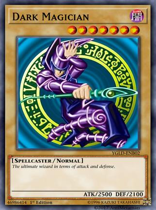
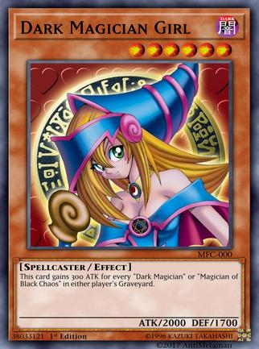

Yami Yugi
When Yugi Muto completed the Millennium Puzzle, he was infused with Yami Yugi's spirit. He is a Duelist of incredible power, battling Seto Kaiba and countless other rivals in Duels of blistering ferocity. His Deck relies on DARK-Attribute cards, such as "Dark Magician" and "Kuriboh." Obtainable during the tutorial (you must choose between Yami Yugi and Seto Kaiba). If not chosen during the tutorial, Character Unlock Missions appear at Stage 16.


